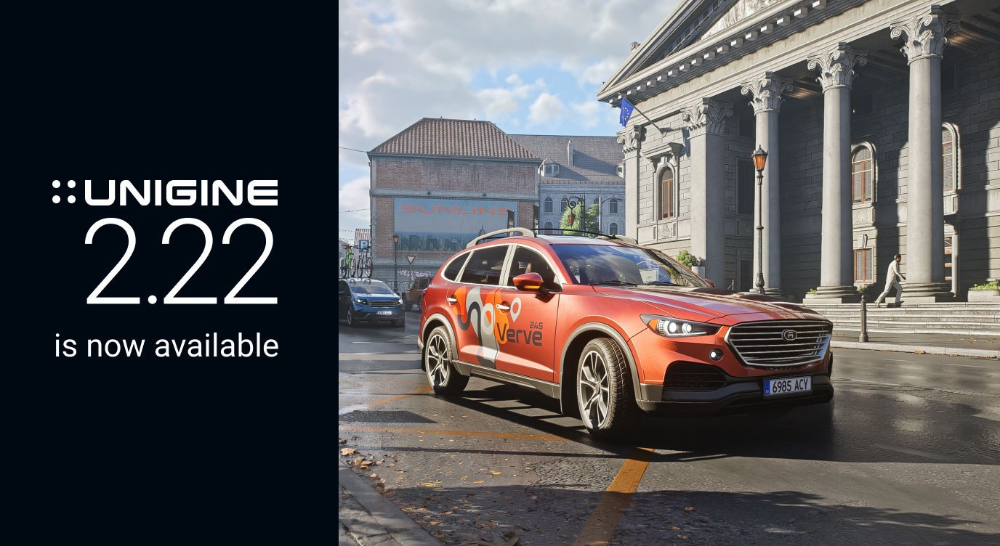

UNIGINE 2.22：新 Sequencer、動畫串流與 Animation Graph IK／Constraint
UNIGINE 2.22 把 Sequencer、非同步動畫串流、IK／Look At／Joint Constraint、Dynamic Resolution 與渲染更新一起推進，對即時 3D 與技術美術管線有直接影響。

引擎工具 ★★★★★
完整分析
技術／流程變更
2.22 以 Sequencer 取代舊 Tracker 路線，加入 auto-key、可重用 sequence、物件綁定與 C++／C# API；Animation Graph 同時新增 IK、Look At、關節約束與程序姿態控制。
Production 影響
動畫密集場景可使用非同步動畫串流，搭配新的 timeline 與 graph 能把過場、角色動作與工具自動化更集中在 Editor 內完成，減少外部工具往返。
導入測試與限制
官方同時列出 Dynamic Resolution、陰影與效能改進，但實際收益仍需用目標角色數、骨架複雜度與平台做 benchmark；先驗證 Sequencer／Animation Graph 與既有資產相容性。